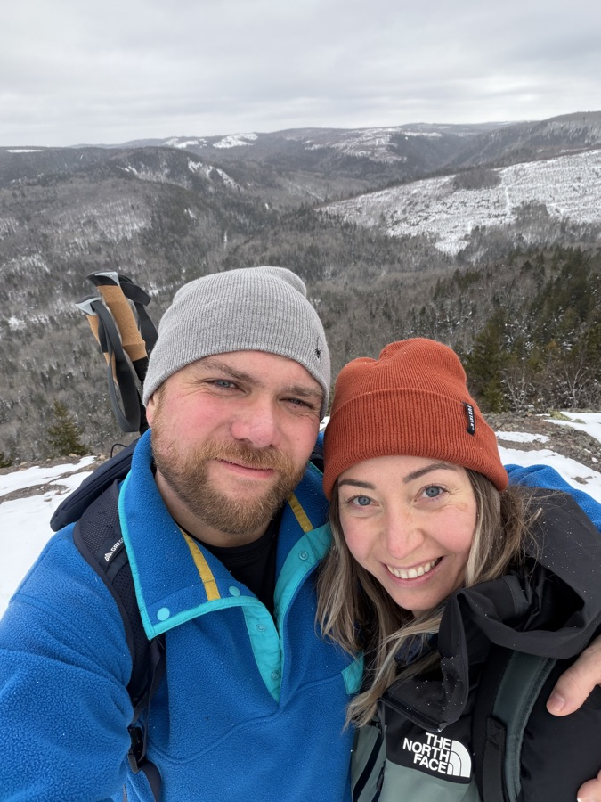

01
Chip8-C
A small machine, a deep rabbit hole. A Chip-8 emulator with a C++ frontend, debugger, disassembler, and assembler.
Developer. Maker. Always curious.
Building software.
Understanding the pieces.
I’m a senior software developer at MinuteBox, working on backend systems with Go, TypeScript, and Google Cloud. Based in Fredericton, New Brunswick.
01 / About
From embedded software and thermal testing equipment to security products and cloud APIs, I like figuring out how things work—and making them work better.
My background spans hands-on development, leading R&D teams, and troubleshooting systems when the answer isn’t obvious. Today, I build integrations and internal APIs at MinuteBox, and help shape our AI development tools.
Outside of work, that same curiosity turns into emulators, experiments with randomness, and an ever-growing reading list.
02 / Selected projects
A small machine, a deep rabbit hole. A Chip-8 emulator with a C++ frontend, debugger, disassembler, and assembler.
What does human unpredictability look like as a seed? An experiment using hashed Reddit comments for random number generation—not a claim of cryptographic security.
A Discord bot that brings the Random Number API into chat. A small companion project connecting an experiment to a community.
03 / The path so far
Software, systems, and the people behind them.
MinuteBox
Building third-party integrations, product features, and internal APIs for filings and searches with Go, TypeScript, and Google Cloud. Helping shape internal AI development tools.
IBM
Integrated RHEL systems and tools, and collaborated across teams using Java, PostgreSQL, Bash, Python, and Go.
IBM
Investigated complex code and system issues as a third-line responder. Worked with support and development teams to deliver workarounds, hot fixes, and resolutions.
Thermtest
Led R&D and production teams, built embedded and desktop software, and developed internal systems and CI pipelines. Successfully applied for and completed an IRAP project.
University of New Brunswick · 2016–2018
CompuCollege · 2002–2004
US 16/592,858 · Filed Oct 4, 2019
Opposing hot and cold cells for stable thermal conductivity testing.
CA 2819325 · Filed Jun 26, 2013
Switching multiple signal sources to a single measuring device.
04 / Brain blobs
Things I’ve built, books I’ve read,
and ideas worth writing
down.
A first look at the electronics and control strategy for a temperature-controlled smoker blower.
Experiments with opencode and a personal AI coding workflow.
Building along with Luca Palmieri’s guide to production-ready Rust.
Two books by Alex Edwards that helped deepen my Go skills.
Exploring Reddit comments as a source of randomness.
From the instruction set to a debugger and disassembler.

05 / Away from the keyboard
Sometimes the best thing to build is something you can hold. Sometimes it’s just a good day outside.
Exploring new paths, getting outside, and staying active.
Woodworking and welding scratch a different kind of creative itch.
Exploring whiskey, scotch, and bourbon—and the craft behind them.
06 / Keep in touch
Want to talk software, swap a book recommendation, or compare notes on something you’re building?